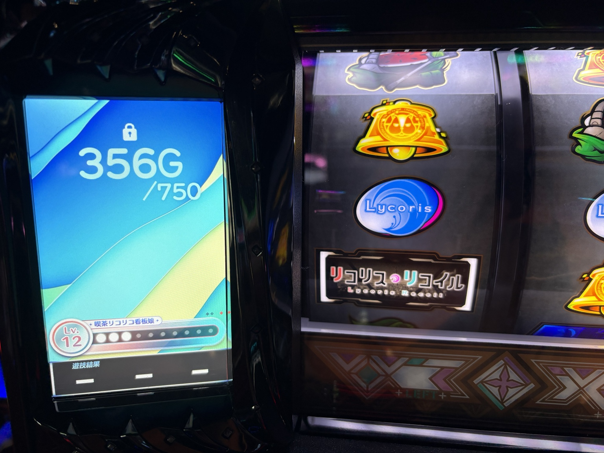
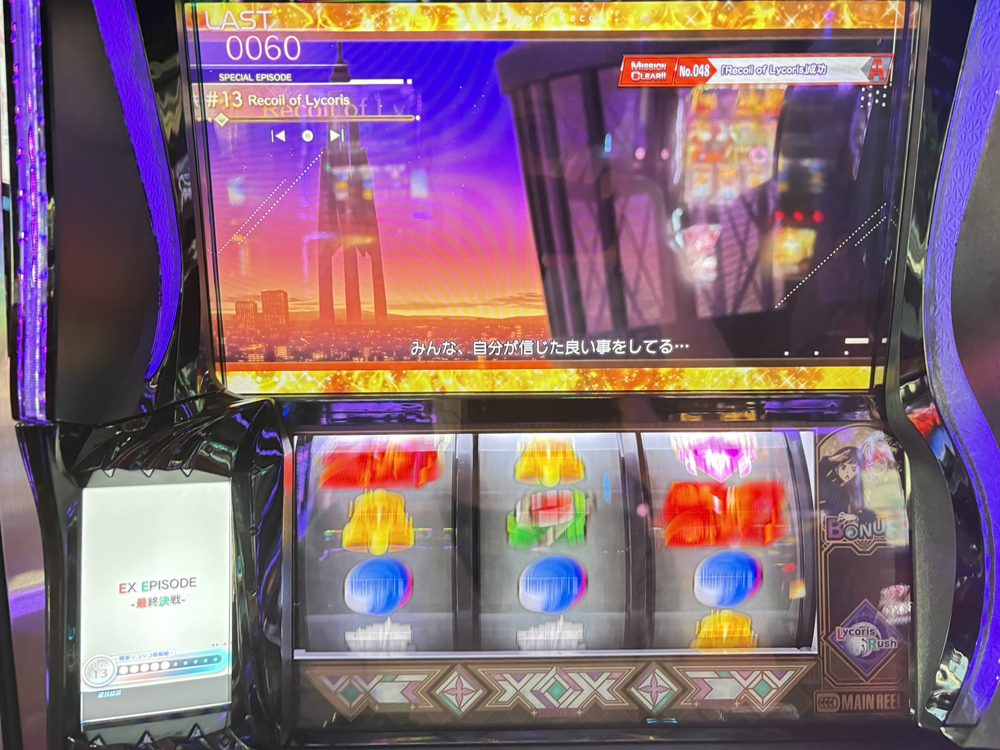
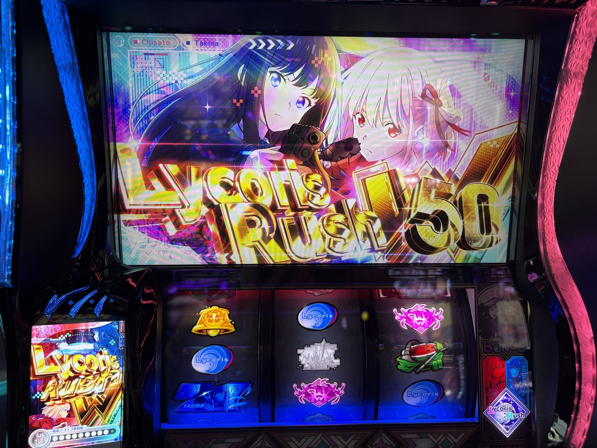

機種別実戦記録
750G表示でも600G＋αで当選。リコリコ駆け抜け後の実戦
2026年10月12日。750Gの短縮表示から600G＋αで当選するも駆け抜け。後半は上位CZをリプレイで突破し、ラッシュWで＋308枚まで挽回しました。
実戦終了・設定不明最終更新：2026年10月13日
結果と今回の発見
＋308枚最終収支
2,345G通常ゲーム数
7回AT初当たり
750Gへの短縮表示が出たのに、ATに当たったのは600G＋α。駆け抜けが続いて苦しい展開でしたが、後半の上位CZ突破で挽回し、＋308枚で終えました。
一度の当選結果だけでは、救済の内部処理や追加短縮の有無まで証明できません。
実戦の3場面
1．駆け抜け後に「356G／750」
AT駆け抜け後、スタンプカードに青い短縮告知。サブ液晶は356G／750と表示され、駆け抜け後の救済との関係が気になりました。

タップして拡大 ↗サブ液晶は「356G／750」。この区間は後に600G＋αで当選しました。2．600G＋αで当選、再び駆け抜け
その区間は600G＋αでAT当選。終了画面はデフォルト、トロフィーなしで、ATは再び駆け抜けました。
3．上位CZをリプレイで突破
その後の通常ATで1000ptに到達。Recoil of Lycorisをリプレイで成功させ、ラッシュWへ。

タップして拡大 ↗リプレイで上位CZを突破。右上に成功表示、サブ液晶に「EX EPISODE 最終決戦」。上位中にもMAX表示を経て、ラッシュW 50Gへ復帰。苦しかった前半から、一気に流れが変わりました。

タップして拡大 ↗ラッシュW 50Gへ復帰した場面。最後の実機表示はTOTAL2,234枚。投資1,972枚、回収2,280枚で、収支は＋308枚でした。
 タップして拡大 ↗終了画面は千束制服、TOTAL2,234枚。ATの獲得表示・回収枚数・一日の収支はそれぞれ別の数値です。
タップして拡大 ↗終了画面は千束制服、TOTAL2,234枚。ATの獲得表示・回収枚数・一日の収支はそれぞれ別の数値です。判断と所感
前半はグラフ上で約−1,800枚まで下落。後半の上位ラッシュで挽回し、投資1,972枚・回収2,280枚で終了しました。
終了画面は高設定示唆・弱が2回、それ以外はデフォルトでした。出玉は取り戻せましたが、設定を強く絞れる材料は乏しく、結論は「設定不明」です。
上位終了後157GでCZなしとの記録はありますが、最終のやめゲーム数・下パネル明滅終了・前兆終了の確認結果は記録されていません。一律のやめどきの根拠には使用しません。
実戦データ
| 項目 | 結果 |
|---|
| 投資 | 1,972枚 |
| 回収 | 2,280枚 |
| 収支（回収−投資） | ＋308枚 |
| 総ゲーム数 | 3,885G |
| 通常ゲーム数 | 2,345G |
| AT初当たり | 7回（1/335.00） |
| マイスロ最大TOTAL獲得枚数 | 2,272枚 |
| 終了時の実機TOTAL表示 | 2,234枚 |
全データ・当選の経過・設定示唆を見る
最終マイスロデータ（16:24）
| 項目 | 回数 | 表示確率・補足 |
|---|
| 総CZ突入 | 13回 | 1/180.39 |
| OPPOSITE BATTLE突入 | 11回 | 1/213.19 |
| OPPOSITE BATTLE成功 | 6回 | 6/11＝54.5%（単純集計） |
| FIRST LYCORIS突入 | 2回 | 1/1172.50 |
| FIRST LYCORIS成功 | 1回 | 1/2＝50.0%（単純集計） |
| Lycoris Rush突入 | 7回 | 1/335.00 |
| Lycoris Rush W突入 | 1回 | |
| ウォールナットハック発動 | 4回 | |
| PTMAX到達 | 1回 | マイスロの集計値。上位中にもMAX表示の写真あり |
| Recoil of Lycoris突入／成功 | 各1回 | リプレイで成功 |
| AFTER EPISODE | 0回 | |
| ENDING EPISODE | 0回 | |
| ロングフリーズ | 0回 | |
| 総ボーナス | 29回 | |
| Lycoris BONUS | 8回 | |
| Lycoris BONUS W | 20回 | |
| りこりすぷらっしゅBONUS | 1回 | 最大上乗せ340枚 |
| EPISODE BONUS | 0回 | |
| Legendary Lycoris | 0回 | 最大上乗せ0枚 |
CZ・ATの表示確率は通常ゲーム数2,345Gを分母にしている。成功率は救済等の当選経路を分離できていないため、設定評価にそのまま使用しない。
最大TOTAL獲得時のボーナス内訳：計16回（通常3回、W12回、りこりすぷらっしゅ1回）。
小役
| 小役 | 回数 | マイスロ表示確率 |
|---|
| スイカ | 50回 | 1/77.70 |
| チェリー | 46回 | 1/84.46 |
| 弱リコリス目 | 53回 | 1/73.31 |
| 強リコリス目 | 2回 | 1/1942.50 |
| 中段チェリー | 0回 | 算出なし |
小役の表示確率は総ゲーム数3,885Gが分母。通常時のみの実測とは区別する。
実戦の経過
| 時点 | 確認できた内容 |
|---|
| 12:08 | 総1,287G、通常796G、CZ4回、AT3回、ハック2回、ボーナス10回 |
| 序盤の終了画面 | デフォルト2回、たきな私服1回。たきなモード後の私服は高設定示唆・弱 |
| 12:50前後 | FIRST LYCORISを失敗。4回目のATは駆け抜け、終了画面デフォルト、トロフィーなし |
| 12:52 | 総1,836G、通常1,292G、CZ7回（通常6・FIRST1）、AT4回、ボーナス10回 |
| 14:02 | 駆け抜け後に青の短縮告知。サブ液晶は356G／750と表示 |
| 14:19 | 600G＋αでAT当選。そのATも駆け抜け。終了画面デフォルト、トロフィーなし |
| 14:32 | スタンプカード3回中、750Gへの短縮告知は1回 |
| 15:17 | 通常ATでMAX1000pt到達の写真 |
| 15:18 | 上位CZ「Recoil of Lycoris」をリプレイで成功。EX EPISODE「最終決戦」へ |
| 15:23 | NEXT Lycoris Rush W表示。上位ラッシュへ |
| 15:50 | 上位中に再びMAX1000pt表示 |
| 15:51 | Lycoris Rush W 50Gへ復帰の写真・本人報告 |
| 16:06 | AT終了。実機TOTAL2,234枚、千束制服の終了画面 |
| 16:17 | AT後157GでCZなし |
| 16:24 | 最終マイスロ取得。最終のやめゲーム数や終了直前の前兆・下パネルの状態は記録なし |
設定示唆の記録
- 終了画面の合計：高設定示唆・弱が2回、それ以外はデフォルト。
- 弱示唆のうち1回は、たきな私服（たきなモード中）。もう1回の画面種類・モード・出現時刻は未記録。
- 16:06の写真は千束制服。
- 初期および報告のあった駆け抜け後はトロフィーなし。最終AT終了時のトロフィー有無は未確認。
- 強い設定示唆・設定確定画面を確認した記録はありません。
- スタンプカードの750G短縮告知は、駆け抜け後の救済と重なるため、独立した高設定材料として評価しない。
観察・所感
前半はAT駆け抜けが続き、マイスログラフでは約−1,800枚まで下落。後半に通常ATから1000ptを獲得し、上位CZをリプレイで突破。ラッシュW突入と50G復帰を経て出玉を伸ばし、収支＋308枚で終了しました。
設定を強く期待させる材料は乏しい一方、駆け抜けや一度の上位突入だけで設定を断定できない。今回の評価は「設定不明」。勝敗と設定評価を分けて残す。
気になった表示と、次に見るポイント
- サブ液晶の鍵マーク：朝から表示、リール停止後も消えず、メニューは開く。意味は特定できません。表示中もメニューを開けたため、鍵マークだけで操作ロックとは判断できません。
- 750G告知のあった区間で600G＋αの当選を実測。追加短縮の有無や内部抽選までは、この結果だけでは判定できない。
- 次回はATごとの当選G数・通常20／ハック後50・終了画面・トロフィー、CZ当選経路を記録すると比較しやすい。
確認元と関連ガイド
実戦日：2026年10月12日。数値は当日のマイスロ（12:08・12:52・16:24）と実戦メモ、写真はシュウ３が撮影したものです。開始ゲーム数は記録にないため、着席時の状態は判断できません。
リコリコの設定示唆ガイド → ／ 当日のまとめ →